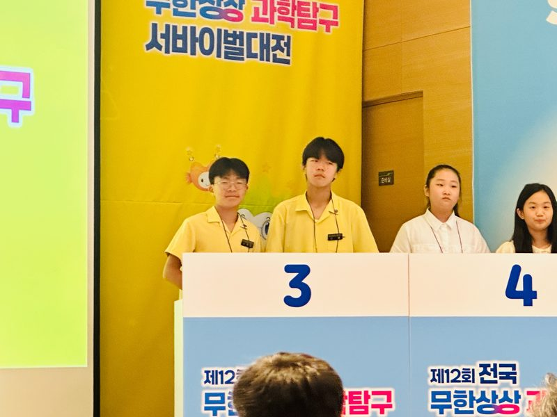

AI 이해
AI와 친해지고 컴퓨팅 사고력을 기르는 과정
- 키보드와 친해지기
- 비버챌린지
- 생성형 AI 활용 ★
- COS 도전단
- 컴퓨터 스킬
FOX AI연구소는 AI를 올바르게 이해하고 활용하는 능력을 통해
질문하는 힘, 창의적 사고, 디지털 윤리까지 함께 성장할 수 있습니다.
AI와 디지털 도구의 원리를 이해하고 올바르게 판단하기
AI에게 원하는 결과물을 정확하게 전달하며 효과적으로 소통하기
문제를 해결하기 위해 AI 기술과 디지털 도구 활용하기
나만의 아이디어를 결과물로 완성하고 공유하기

질문과 탐구를 시작으로 코딩, 데이터, 디지털 도구를 활용하여 문제를 해결하고
창의적으로 표현하는 프로젝트 기반 학습(PBL)을 진행합니다.
주제 이해, 문제 발견, 팀 구성, 역할 나누기
SEL — 협력 · 의사소통 · 공감아이디어 브레인스토밍, 해결 방법 탐색, 자료 조사, 디지털 도구 선택
AI — 기초 코딩 · 문제 이해코딩 구조 만들기, 레고 모델링, 게임 설계, AI 활용 구조 만들기
STEAM — 과학 · 기술 · 공학 · 예술 · 수학블록코딩 · 파이썬, 로봇 제어, AI 창작, 게임 제작, 마인크래프트 프로젝트
PBL — 프로젝트 기반 문제 해결결과 발표, 피드백 공유, 수정 및 보완, 자기 성찰
성장 — 학습 성찰 · 자신감 향상AI와 친해지고 컴퓨팅 사고력을 기르는 과정

코딩 언어와 디지털 표현을 배우는 과정

AI와 다양한 도구로 문제를 해결하는 과정

AI를 활용해 나만의 결과물을 만드는 과정
★ 성인 대상으로도 가능한 프로그램입니다.
AI 연구소에서는 인공지능, 코딩, 수학 등을 융합한 다양한 프로그램을 개발 및 운영하고 있으며, AI의 원리를 이해하고 효과적으로 소통하며 문제를 해결하고 자신만의 아이디어를 결과물로 나타낼 수 있도록 다양한 디지털 도구를 활동 자료로 활용하고 있습니다.
| No | 추천 대상 | 활동명 | 활동 내용 | 활동 사진 |
|---|---|---|---|---|
| 1 | 유아 | 어린이 스크래치 친해지기 | 스크래치 주니어, 스크래치에서 사용되는 기능과 조작 방식을 탐색하고 다양한 동화 속 문제를 파악하여 해결 방안을 블록 코딩으로 구현해보는 활동 |  |
| 2 | 유아, 초등 저학년 (1~3학년) |
즐거운 레고 실험실 | 브릭큐 모션 에센셜의 기본 학습 단원을 활용하여 다양한 과학 원리들을 직접 실험할 수 있는 활동 |  |
| 3 | 유아, 초등 저·고학년 (1~6학년) |
레고 튜토리얼 | 스파이크 에센셜의 기본 학습 단원을 활용하여 레고 코딩에 꼭 필요한 테크니컬 부품의 사용 방식을 경험하며 익힐 수 있는 활동 |  |
| 4 | 초등 저·고학년 (1~6학년) |
레고로 키우는 문제 해결의 힘 | 기본 학습 단원을 1번 이상 끝낸 학생들을 대상으로 주제에 맞춰 문제를 해결할 수 있도록 기본 모델을 변형하고 코딩을 확장해보는 활동 |  |
| 5 | 초등 저·고학년 (1~6학년) ★ |
레고 STEM 실험실 | 스파이크 프라임의 기본 학습 단원을 통해 로보틱스 기술과 더불어 수학, 공학, 기술적 사고를 확장시킬 수 있는 활동 |  |
| 6 | 초등 저·고학년 (1~6학년) |
스크래치로 코딩과 친해지기 | 스크래치를 통해 다양한 창작활동을 접하고 조건문·루프문·변수 등 블록 코딩 개념을 쉽게 이해할 수 있는 활동 |  |
| 7 | 초등 저·고학년 (1~6학년) ★ |
스크래치로 게임 만들기 | 게임의 구성요소와 설계방법을 알아보고 다양한 구현 방식과 메커니즘을 탐구하여 나만의 게임을 설계·제작하는 활동 |  |
| 8 | 초등 저학년 (1~3학년) ★ |
마인크래프트 Coding : 우리의 세상 만들기 |
마인크래프트 에듀케이션에서 블록코딩으로 우리의 세상을 만드는 팀 프로젝트 활동 |  |
| 9 | 초등 저·고학년 (1~6학년) ★ |
마인크래프트 Coding : 마을을 지켜라 |
마인크래프트 에듀케이션에서 직업별로 코딩을 나누어 협업하는 PBL/SEL 기반 활동 |  |
| 10 | 초등 저·고학년 (1~6학년) ★ |
마인크래프트 Coding : 에이전트와 함께해요 |
마인크래프트 에듀케이션에서 에이전트를 움직이는 코드를 만들고 수정하며 문제를 해결하는 코딩 활동 |  |
| 11 | 초등 고학년 (5~6학년), 중학생 ★ |
파이썬 기초 | 파이썬의 기본 문법과 명령 구조를 배우며 코딩을 통해 파이썬의 기초를 익히는 활동 |  |
| 12 | 유아~고학년 전체 ★ | 생성형 AI 활용 | 주제에 따라 GPT를 활용하여 글쓰기·토론·그림 그리기 등을 진행하는 활동 |  |
| 13 | 초등 3학년 이상 ★ | 알수잇다! | 수학 문제를 직접 풀고, 알고리즘으로 정리한 뒤 코딩으로 표현하여 수학 개념과 논리적 문제 해결 과정을 경험하는 활동 |  |
| 14 | 초등 2학년 이상 ★ | AI·디지털 문화유산과 떠나는 역사 여행! |
AI·디지털 기술로 우리 문화유산을 탐구하고 보존·복원 과정을 체험하며 역사와 미래 기술을 이해하는 활동 |  |
★ 성인 대상으로도 가능한 프로그램입니다.
프로젝트 기반 학습(PBL)을 중심으로 다양한 활동 및 대회 프로그램에 도전하고 참여합니다.
창의적 문제 해결, 협업 역량을 높이기 위해 문제 발견부터 결과물 제작, 발표까지의 경험을 제공합니다.

FLL 대회를 준비하기 위한 팀 활동
(엔지니어링 노트북 활동지 대체)

무한상상 과학 탐구대회를 준비하기 위해
아이디어와 토론 연습을 하는 팀 기반 협력 활동
★ 성인 대상으로도 가능한 프로그램입니다.


우리가 만드는 세상

마을을 지켜라

에이전트와 함께해요

AI와 친해지기 첫발자국

알수잇다!
채널 FOX_LC
대전광역시 유성구 엑스포로97번길 40,
2층 폭스러닝센터
"AI와 함께 새로운 가치를 만드는 아이, AI연구소가 함께 합니다."